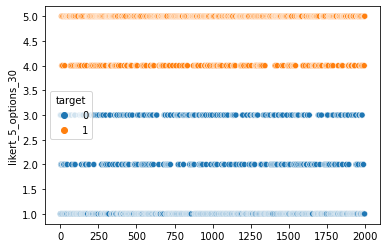

Creating synthetic ordinal data¶
[1]:
import pandas as pd
import numpy as np
import matplotlib.pyplot as plt
import seaborn as sns
from jmspack.NLTSA import flatten
[2]:
# column_amount = 10
# answer_options = [1, 2, 3, 4, 5]
# row_amount = 50
# answer_probabilities = [0.4, 0.1, 0.1, 0.1, 0.3]
# df = pd.DataFrame()
# for column_num in range(0, column_amount):
# np.random.seed(69420 + column_num)
# uniform_array = np.random.choice(
# a=answer_options,
# size=row_amount,
# p=answer_probabilities
# )
# current_df = pd.DataFrame({f"likert_{len(answer_options)}_options_{column_num}":uniform_array})
# df = pd.concat([df, current_df], axis=1)
[3]:
def ordinal_data_creation(column_amount,
answer_options,
row_amount,
answer_probabilities):
df = pd.DataFrame()
for column_num in range(0, column_amount):
np.random.seed(69420 + column_num)
if answer_probabilities is None:
uniform_array = np.random.choice(
a=answer_options,
size=row_amount,
p=flatten(np.random.dirichlet(np.ones(len(answer_options)),size=1).tolist())
)
print({f"likert_{len(answer_options)}_options_{column_num}": flatten(np.random.dirichlet(np.ones(len(answer_options)),size=1).tolist())})
else:
uniform_array = np.random.choice(
a=answer_options,
size=row_amount,
p=answer_probabilities
)
print({f"likert_{len(answer_options)}_options_{column_num}": answer_probabilities})
current_df = pd.DataFrame({f"likert_{len(answer_options)}_options_{column_num}":uniform_array})
df = pd.concat([df, current_df], axis=1)
return df
[4]:
row_amount = 2000
df_1 = ordinal_data_creation(column_amount = 30,
answer_options = [1, 2, 3, 4, 5],
row_amount = row_amount,
answer_probabilities = None)
df_2 = ordinal_data_creation(column_amount = 10,
answer_options = [1, 2, 3, 4, 5],
row_amount = row_amount,
answer_probabilities = [0.4, 0.1, 0.1, 0.1, 0.3])
df_2.columns = [x[:-1] + str(int(x[-1]) + 30) for x in df_2.columns.tolist()]
df_3 = ordinal_data_creation(column_amount = 10,
answer_options = [1, 2, 3, 4, 5, 6, 7],
row_amount = row_amount,
answer_probabilities = None)
df_4 = ordinal_data_creation(column_amount = 10,
answer_options = [0, 1],
row_amount = row_amount,
answer_probabilities = [0.9, 0.1])
bool_df = ordinal_data_creation(column_amount = 1,
answer_options = [0, 1],
row_amount = row_amount,
answer_probabilities = [0.6, 0.4])
bool_df.columns = ["target"]
df = pd.concat([df_1, df_2, df_3, df_4, bool_df], axis=1)
{'likert_5_options_0': [0.3260497316019787, 0.17021080937036878, 0.20238572809340846, 0.1398947366106401, 0.161458994323604]}
{'likert_5_options_1': [0.08777919292218628, 0.11191711990196725, 0.18016252873285118, 0.16844854627309122, 0.451692612169904]}
{'likert_5_options_2': [0.49617221548341156, 0.18379184363308368, 0.08760265629706548, 0.13114380297375605, 0.10128948161268306]}
{'likert_5_options_3': [0.15041858482432638, 0.029361316457183314, 0.08469127721920586, 0.250929064299109, 0.4845997572001755]}
{'likert_5_options_4': [0.36942123568391816, 0.1309521144166391, 0.2848324249275291, 0.0655132232116965, 0.14928100176021722]}
{'likert_5_options_5': [0.1380782844001991, 0.2292352905787918, 0.1981735388766408, 0.06811444737903176, 0.3663984387653367]}
{'likert_5_options_6': [0.012044480134060658, 0.35340651273441764, 0.19850441118878964, 0.1932497693009291, 0.242794826641803]}
{'likert_5_options_7': [0.13228973044665338, 0.017301326305110536, 0.1351938215960546, 0.15865722964735782, 0.5565578920048236]}
{'likert_5_options_8': [0.2698073421453759, 0.05445708561248983, 0.06204225418965961, 0.2794578926464866, 0.33423542540598805]}
{'likert_5_options_9': [0.22096209876409983, 0.3683702355202157, 0.21923184530656803, 0.08826180074593339, 0.1031740196631831]}
{'likert_5_options_10': [0.03445579213251957, 0.18057639545131451, 0.40157480972500653, 0.1476217929368393, 0.23577120975431992]}
{'likert_5_options_11': [0.7148096888129006, 0.10989507530562942, 0.010073028008272233, 0.13498396016658315, 0.030238247706614672]}
{'likert_5_options_12': [0.12123685754213585, 0.24736155229396636, 0.32053081160376956, 0.02605395835861544, 0.2848168202015126]}
{'likert_5_options_13': [0.21984349797749753, 0.09678757891178506, 0.4042007039150064, 0.16740572884710056, 0.11176249034861045]}
{'likert_5_options_14': [0.02509355235514322, 0.13753165226911512, 0.46603295214465384, 0.044905108355807175, 0.3264367348752807]}
{'likert_5_options_15': [0.2855871540139263, 0.20894890559295617, 0.20402737729593975, 0.08020158701072012, 0.2212349760864576]}
{'likert_5_options_16': [0.016859528519665778, 0.27730946617877567, 0.032919197992800894, 0.009050903877528254, 0.6638609034312295]}
{'likert_5_options_17': [0.2203553898310582, 0.19043715106320505, 0.26846055756337334, 0.07500563545665113, 0.24574126608571228]}
{'likert_5_options_18': [0.0338898063660841, 0.03364472110024661, 0.006649480265914805, 0.3285978302988614, 0.597218161968893]}
{'likert_5_options_19': [0.2649540455530784, 0.041275797296955075, 0.3580082957095305, 0.11183640185947781, 0.22392545958095827]}
{'likert_5_options_20': [0.13533684852703093, 0.11582961199752453, 0.21316226372491828, 0.32778518803935697, 0.20788608771116934]}
{'likert_5_options_21': [0.05640742595207831, 0.1920758931744514, 0.40038028091433736, 0.2537056583615812, 0.09743074159755184]}
{'likert_5_options_22': [0.28443685227821247, 0.5421179617737621, 0.0048147752207973755, 0.050354861112876105, 0.11827554961435177]}
{'likert_5_options_23': [0.054459358300603576, 0.16520101455555808, 0.10167329249009253, 0.6622693855374544, 0.016396949116291387]}
{'likert_5_options_24': [0.3550352259713607, 0.2010220837605364, 0.046551471467427864, 0.34737583144762874, 0.05001538735304646]}
{'likert_5_options_25': [0.12711980345735233, 0.07975061150979235, 0.2579434097195905, 0.3354937634925402, 0.1996924118207248]}
{'likert_5_options_26': [0.16897560466843864, 0.2144783582676875, 0.19510556117269978, 0.26335436079387153, 0.15808611509730258]}
{'likert_5_options_27': [0.5000281488694938, 0.11227324105677823, 0.13223729504290851, 0.11134772090231362, 0.1441135941285058]}
{'likert_5_options_28': [0.6288642666666908, 0.2911760749369517, 0.048267228567051734, 0.009332037774234072, 0.022360392055071808]}
{'likert_5_options_29': [0.3060951893799885, 0.10047492821004562, 0.05119456177898828, 0.16546396248255338, 0.3767713581484242]}
{'likert_5_options_0': [0.4, 0.1, 0.1, 0.1, 0.3]}
{'likert_5_options_1': [0.4, 0.1, 0.1, 0.1, 0.3]}
{'likert_5_options_2': [0.4, 0.1, 0.1, 0.1, 0.3]}
{'likert_5_options_3': [0.4, 0.1, 0.1, 0.1, 0.3]}
{'likert_5_options_4': [0.4, 0.1, 0.1, 0.1, 0.3]}
{'likert_5_options_5': [0.4, 0.1, 0.1, 0.1, 0.3]}
{'likert_5_options_6': [0.4, 0.1, 0.1, 0.1, 0.3]}
{'likert_5_options_7': [0.4, 0.1, 0.1, 0.1, 0.3]}
{'likert_5_options_8': [0.4, 0.1, 0.1, 0.1, 0.3]}
{'likert_5_options_9': [0.4, 0.1, 0.1, 0.1, 0.3]}
{'likert_7_options_0': [0.1028642990063549, 0.07110271140013663, 0.08206293213374803, 0.08160071375445849, 0.2988614359954494, 0.14820552899603343, 0.21530237871381908]}
{'likert_7_options_1': [0.08090668982320186, 0.07564622000113605, 0.20284436683530271, 0.023302508402303915, 0.20249740220187804, 0.246759572881609, 0.16804323985456854]}
{'likert_7_options_2': [0.10168244281641418, 0.15222166553244953, 0.11756905963056842, 0.2015269559575192, 0.2521656104960905, 0.16866089363112086, 0.006173371935837414]}
{'likert_7_options_3': [0.0578691522706486, 0.17145865203416133, 0.3311247398849803, 0.029926162829100576, 0.2493314940534007, 0.13656296974397455, 0.023726829183734033]}
{'likert_7_options_4': [0.23675439571638918, 0.05445497849082502, 0.12408325131055528, 0.19856504660459984, 0.03032861912119273, 0.06316563373163855, 0.29264807502479945]}
{'likert_7_options_5': [0.21386868717561103, 0.07350904425092684, 0.39541683277258505, 0.2057930008345625, 0.0077290947846081325, 0.06297157931145612, 0.04071176087025043]}
{'likert_7_options_6': [0.15644642602492062, 0.15230510776164646, 0.19135284026169488, 0.20262313806708032, 0.1463303540024974, 0.13234715165476776, 0.018594982227392608]}
{'likert_7_options_7': [0.12250488693405796, 0.1437660815395402, 0.5043208397202252, 0.019363228491196465, 0.002086193364440244, 0.06298139986216192, 0.1449773700883779]}
{'likert_7_options_8': [0.030409087188572513, 0.1369721254331551, 0.16382051757194668, 0.14078351304461942, 0.011748444865206209, 0.11471043208046906, 0.4015558798160309]}
{'likert_7_options_9': [0.30552449063496173, 0.12300284968963812, 0.1437847214225458, 0.21252388424569238, 0.01323052904302421, 0.04479524257702839, 0.1571382823871094]}
{'likert_2_options_0': [0.9, 0.1]}
{'likert_2_options_1': [0.9, 0.1]}
{'likert_2_options_2': [0.9, 0.1]}
{'likert_2_options_3': [0.9, 0.1]}
{'likert_2_options_4': [0.9, 0.1]}
{'likert_2_options_5': [0.9, 0.1]}
{'likert_2_options_6': [0.9, 0.1]}
{'likert_2_options_7': [0.9, 0.1]}
{'likert_2_options_8': [0.9, 0.1]}
{'likert_2_options_9': [0.9, 0.1]}
{'likert_2_options_0': [0.6, 0.4]}
[5]:
df.head()
[5]:
| likert_5_options_0 | likert_5_options_1 | likert_5_options_2 | likert_5_options_3 | likert_5_options_4 | likert_5_options_5 | likert_5_options_6 | likert_5_options_7 | likert_5_options_8 | likert_5_options_9 | ... | likert_2_options_1 | likert_2_options_2 | likert_2_options_3 | likert_2_options_4 | likert_2_options_5 | likert_2_options_6 | likert_2_options_7 | likert_2_options_8 | likert_2_options_9 | target | |
|---|---|---|---|---|---|---|---|---|---|---|---|---|---|---|---|---|---|---|---|---|---|
| 0 | 1 | 4 | 2 | 1 | 2 | 3 | 3 | 5 | 5 | 3 | ... | 0 | 0 | 0 | 0 | 0 | 0 | 0 | 0 | 0 | 0 |
| 1 | 3 | 1 | 2 | 5 | 1 | 4 | 4 | 5 | 1 | 2 | ... | 0 | 1 | 0 | 1 | 0 | 0 | 0 | 0 | 0 | 0 |
| 2 | 2 | 3 | 3 | 1 | 1 | 3 | 3 | 5 | 4 | 4 | ... | 0 | 0 | 0 | 0 | 1 | 0 | 0 | 0 | 0 | 0 |
| 3 | 5 | 2 | 2 | 5 | 2 | 1 | 3 | 2 | 5 | 3 | ... | 0 | 0 | 0 | 0 | 0 | 0 | 0 | 0 | 0 | 0 |
| 4 | 3 | 4 | 2 | 5 | 2 | 4 | 3 | 5 | 4 | 1 | ... | 0 | 0 | 1 | 1 | 0 | 0 | 0 | 1 | 0 | 0 |
5 rows × 61 columns
Shuffle the target so there are no variables which have a perfect classification¶
[6]:
_ = sns.scatterplot(x=df.index, y=df["likert_5_options_30"], hue=df["target"])

[7]:
df.loc[0:int(row_amount/2), "target"] = df.loc[0:int(row_amount/2), "target"].sample(frac=1, random_state=69420).reset_index(drop=True)
[8]:
df = df.sample(frac=1, random_state=69420).reset_index(drop=True)
[9]:
_ = sns.scatterplot(x=df.index, y=df["likert_5_options_30"], hue=df["target"])
[10]:
df.head()
[10]:
| likert_5_options_0 | likert_5_options_1 | likert_5_options_2 | likert_5_options_3 | likert_5_options_4 | likert_5_options_5 | likert_5_options_6 | likert_5_options_7 | likert_5_options_8 | likert_5_options_9 | ... | likert_2_options_1 | likert_2_options_2 | likert_2_options_3 | likert_2_options_4 | likert_2_options_5 | likert_2_options_6 | likert_2_options_7 | likert_2_options_8 | likert_2_options_9 | target | |
|---|---|---|---|---|---|---|---|---|---|---|---|---|---|---|---|---|---|---|---|---|---|
| 0 | 5 | 1 | 2 | 5 | 5 | 3 | 3 | 5 | 5 | 2 | ... | 1 | 0 | 0 | 0 | 0 | 0 | 0 | 0 | 0 | 0 |
| 1 | 1 | 5 | 5 | 1 | 5 | 3 | 3 | 5 | 5 | 2 | ... | 1 | 0 | 0 | 0 | 0 | 0 | 0 | 0 | 0 | 0 |
| 2 | 5 | 4 | 2 | 5 | 2 | 4 | 3 | 5 | 1 | 3 | ... | 0 | 0 | 0 | 0 | 0 | 0 | 0 | 0 | 0 | 1 |
| 3 | 5 | 4 | 3 | 5 | 5 | 3 | 5 | 4 | 1 | 2 | ... | 0 | 0 | 0 | 0 | 0 | 0 | 1 | 0 | 0 | 0 |
| 4 | 5 | 5 | 3 | 5 | 2 | 3 | 3 | 5 | 1 | 3 | ... | 0 | 0 | 0 | 1 | 0 | 0 | 0 | 0 | 0 | 0 |
5 rows × 61 columns
[11]:
df.info()
<class 'pandas.core.frame.DataFrame'>
RangeIndex: 2000 entries, 0 to 1999
Data columns (total 61 columns):
# Column Non-Null Count Dtype
--- ------ -------------- -----
0 likert_5_options_0 2000 non-null int64
1 likert_5_options_1 2000 non-null int64
2 likert_5_options_2 2000 non-null int64
3 likert_5_options_3 2000 non-null int64
4 likert_5_options_4 2000 non-null int64
5 likert_5_options_5 2000 non-null int64
6 likert_5_options_6 2000 non-null int64
7 likert_5_options_7 2000 non-null int64
8 likert_5_options_8 2000 non-null int64
9 likert_5_options_9 2000 non-null int64
10 likert_5_options_10 2000 non-null int64
11 likert_5_options_11 2000 non-null int64
12 likert_5_options_12 2000 non-null int64
13 likert_5_options_13 2000 non-null int64
14 likert_5_options_14 2000 non-null int64
15 likert_5_options_15 2000 non-null int64
16 likert_5_options_16 2000 non-null int64
17 likert_5_options_17 2000 non-null int64
18 likert_5_options_18 2000 non-null int64
19 likert_5_options_19 2000 non-null int64
20 likert_5_options_20 2000 non-null int64
21 likert_5_options_21 2000 non-null int64
22 likert_5_options_22 2000 non-null int64
23 likert_5_options_23 2000 non-null int64
24 likert_5_options_24 2000 non-null int64
25 likert_5_options_25 2000 non-null int64
26 likert_5_options_26 2000 non-null int64
27 likert_5_options_27 2000 non-null int64
28 likert_5_options_28 2000 non-null int64
29 likert_5_options_29 2000 non-null int64
30 likert_5_options_30 2000 non-null int64
31 likert_5_options_31 2000 non-null int64
32 likert_5_options_32 2000 non-null int64
33 likert_5_options_33 2000 non-null int64
34 likert_5_options_34 2000 non-null int64
35 likert_5_options_35 2000 non-null int64
36 likert_5_options_36 2000 non-null int64
37 likert_5_options_37 2000 non-null int64
38 likert_5_options_38 2000 non-null int64
39 likert_5_options_39 2000 non-null int64
40 likert_7_options_0 2000 non-null int64
41 likert_7_options_1 2000 non-null int64
42 likert_7_options_2 2000 non-null int64
43 likert_7_options_3 2000 non-null int64
44 likert_7_options_4 2000 non-null int64
45 likert_7_options_5 2000 non-null int64
46 likert_7_options_6 2000 non-null int64
47 likert_7_options_7 2000 non-null int64
48 likert_7_options_8 2000 non-null int64
49 likert_7_options_9 2000 non-null int64
50 likert_2_options_0 2000 non-null int64
51 likert_2_options_1 2000 non-null int64
52 likert_2_options_2 2000 non-null int64
53 likert_2_options_3 2000 non-null int64
54 likert_2_options_4 2000 non-null int64
55 likert_2_options_5 2000 non-null int64
56 likert_2_options_6 2000 non-null int64
57 likert_2_options_7 2000 non-null int64
58 likert_2_options_8 2000 non-null int64
59 likert_2_options_9 2000 non-null int64
60 target 2000 non-null int64
dtypes: int64(61)
memory usage: 953.2 KB
[12]:
features_list = df.drop("target", axis=1).columns.tolist()
[13]:
fig, axs = plt.subplots(figsize=(20,100), nrows=len(features_list), ncols=2, gridspec_kw={'width_ratios': [2, 1]})
fig.subplots_adjust(hspace = 0.5, wspace=0.1)
axs = axs.ravel()
for i in range(0, len(features_list)*2, 2):
_ = sns.histplot(data=df, x=features_list[int(i/2)], hue="target", kde=False, bins=10, ax=axs[i])
_ = sns.boxplot(data=df, x="target", y=features_list[int(i/2)], ax=axs[i+1])

[14]:
_ = df.to_csv("data/synthetic_likert_data.csv")